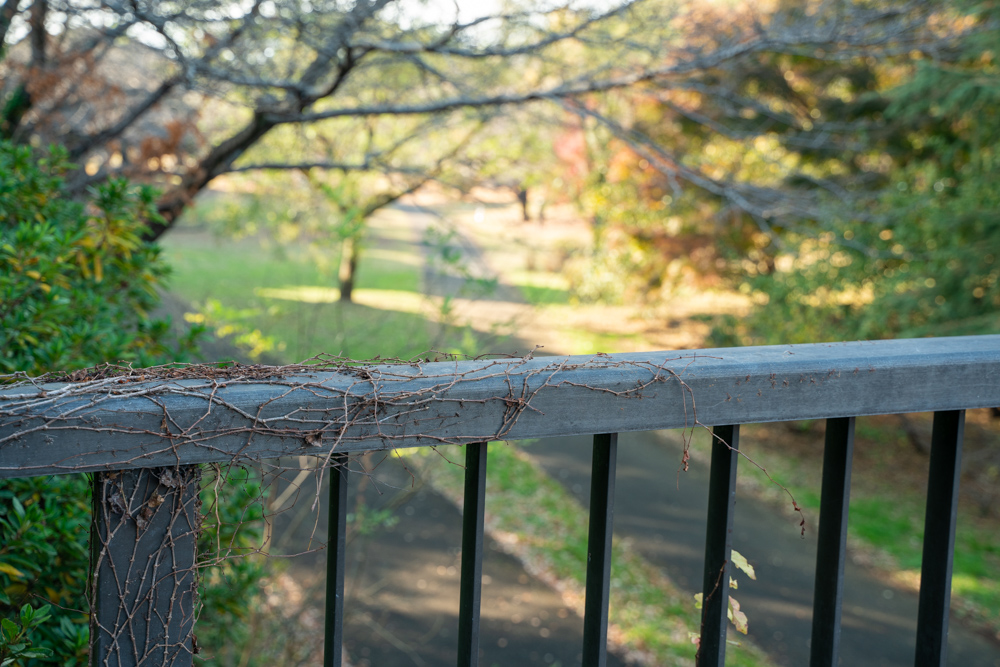
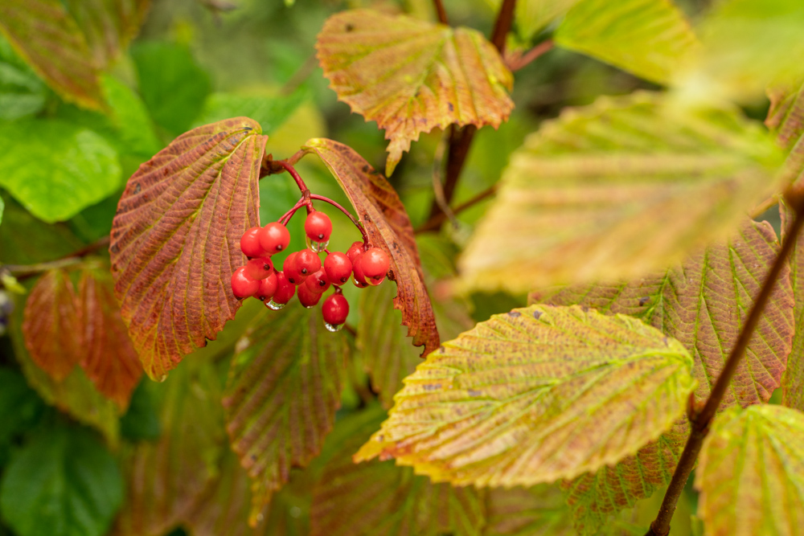
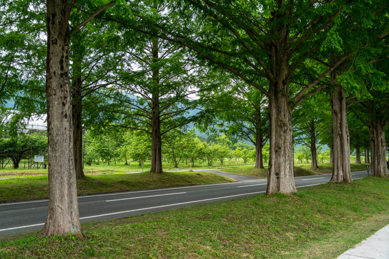
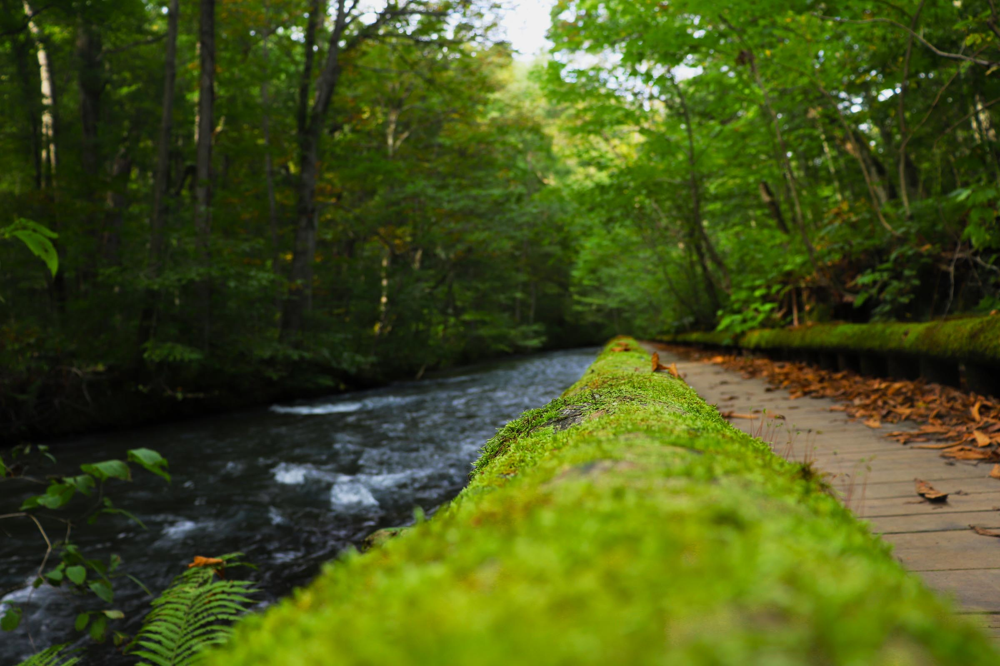
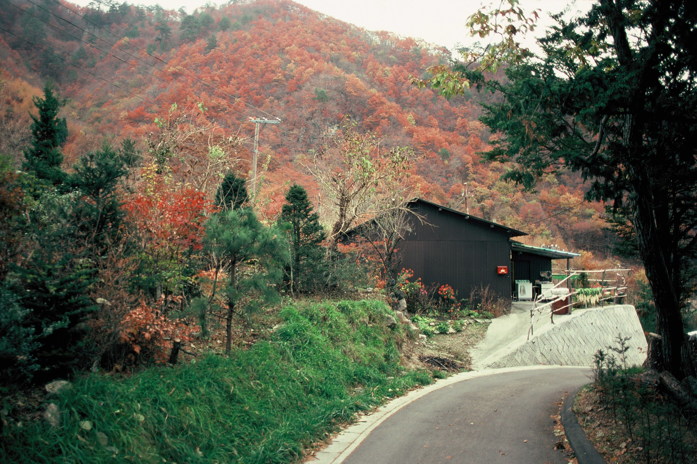
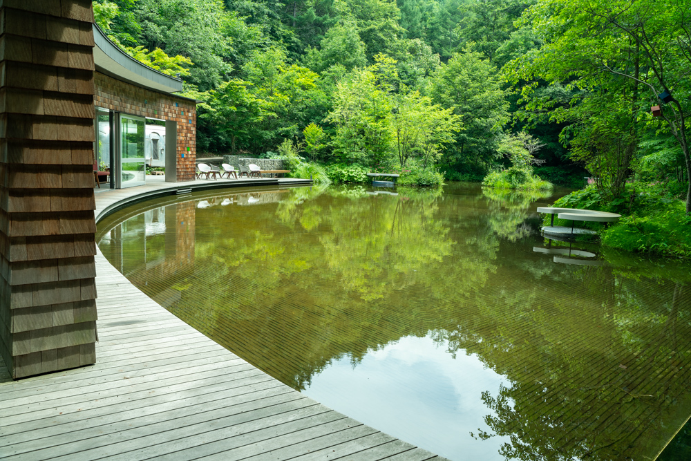
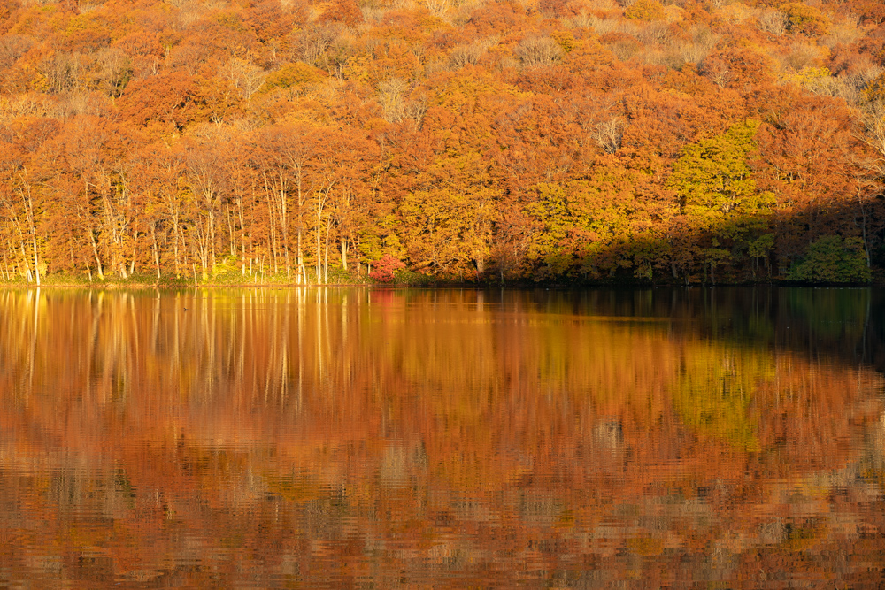

Dolls with funny faces
Dolls with funny faces- Light shines through the clouds
 Construction Machinery
Construction Machinery- antique Perfume Bottle
 a Girl's Prayer
a Girl's Prayer- neighborhood Forest
- sunset Walk
- soak peaches in ice water
 Clover white flowers
Clover white flowers a hotel window in Karuizawa
a hotel window in Karuizawa kumobaike in karuizawa
kumobaike in karuizawa kumobaike in karuizawa
kumobaike in karuizawa- Road with Apto
- Road with Apto
- Satoike
- kumobaike in karuizawa
- Shiraito Falls in karuizawa
- hurikosabou in karuizawa
- Frozen Blueberry
- Silver grass in the garden
- catharanthus roseus
- Artificial ladybugs
- Park bench in late autumn
- Birdwatchers in the Park
- Park in late autumn
- Park in late autumn as seen from the window of the hut
- Small figs and dead leaves
- Handmade Bracelets
- Autumn leaves at Sanboji Pond
- Café Moka
- Christmas show window
- Dried Flower Ornaments
- cupboard
 Primrose in Akigase Park
Primrose in Akigase Park- Pavilion at Sanpoji Pond
- Wild strawberries from the garden
- Button Craftwork
- Miniature figurine in a cupboard
- Miniature figurine in a cupboard
 Lakeside Restaurant
Lakeside Restaurant- Wood deck in the rain
- Viburnum dilatatum
- Plateau Trees
- A small cabin in the woods
- The gate of a villa in a summer resort
- Celosia argentea
- Trees and blue sky on the plateau
- Refreshing summer plateau
- butterfly and Symphyotichum versicolor
- Benches in the garden of the levent museum
- Ryugaeshi Falls
- Summer Bench
- Show window of a general store in karuizawa
- Trees in summer resort areas
- freshly picked pomegranate
- Dice Craftwork
- Silhouette of a person descending stairs
 Fukuroda Falls and Autumn Leaves
Fukuroda Falls and Autumn Leaves- Free seats in the park
- Outside cafe seating
- Sake Brewery in Kyoto
- Railroad bridge across the Uji River
 Kamo River in Kyoto
Kamo River in Kyoto- WE ROAD in Ikebukuro
- Ruins and Cherry Blossoms
- The light leaking from the trees
- light shining on a bench
- Grasses on the roof
- Hachiman moat in the evening
- Old post office bench
- Old post office bench
- Old post office window
- Daily life in the moat
- Fusion of wood and iron cultures
- Japanese sweets shop curtain and fresh greenery
- Avenue of metasequoia trees
- Avenue of metasequoia trees
- A blue heron standing in Lake Biwa
- Torii of Shirahige Shrine on Lake Biwa
- Bench overlooking Lake Biwa
- Avenue of metasequoia trees
- Short Life Butterfly
- Wetlands in Hokkaido
 Late Autumn in Tanba Sasayama
Late Autumn in Tanba Sasayama- Late Autumn in Tanba Sasayama
- Tanba Sasayama
- Tanba Sasayama
- Shibuya, Tokyo
- round window at Genkouan
- Fog of Takamine
- Ohara Sanzenin
- Kegon Falls in Nikko
- Drum cans at a chemical plant
- Kegon Falls in Nikko
- Autumn Leaves in Nikko
- Autumn Leaves in Nikko
- Limoges cups and tea
- Omotesando at Christmas
- Marunouchi at sunset
- Night view of the Marunouchi Building District reflected on the river
- cobblestones and fallen leaves
- Gion Shirakawa in Kyoto
- Building Reflections
- Tiny autumn leaves on a Hosta leaf
- Construction vehicle
- Oirase wooden path
- OKurobe trolley train
- Fireworks on the Jinzu River
- Former Edogawa Ranpo Residence
- Hong Kong in the 1980s
- A jewel-like night view of Hong Kong
- Marina del Rey in the 1980s
- Los Angeles in the 1980s
- German cemetery in the 1980s
- Sagami Bay fishing boat
- Sagami Bay fishing boat
- Sagami Bay fishing boat
- Sagami Bay
- Autumn Leaves of Kinugawa River
- Autumn Leaves of Kinugawa River
- Northern Native Garden in Hokkaido
- Hong Kong in the 1980s
 Hong Kong in the 1980s
Hong Kong in the 1980s- Hong Kong in the 1980s
- my garden
- figure shop
- Akahara wood carving
- Bus Stop in Karuizawa
- Piccio in Karuizawa
- Piccio in Karuizawa
 Piccio in Karuizawa
Piccio in Karuizawa- Tsuta Marsh in the morning glow
- Tsuta Marsh in the morning glow
- Kawagoe, a town of warehouses
- Kawagoe, a town of warehouses
- Kawagoe, a town of warehouses
- Kawagoe, a town of warehouses
- Kawagoe, a town of warehouses
- Kawagoe, a town of warehouses
- Kawagoe, a town of warehouses
- Kawagoe, a town of warehouses
- Kenninji Temple in autumn leaves, Kyoto
- Lighting up Kenninji Temple, Kyoto
- Kenninji Temple, Kyoto
- Kenninji Temple, Kyoto
- Chouontei Garden in autumn leaves, Kyoto
- Chouontei Garden in autumn leaves, Kyoto
- Chouontei Garden in autumn leaves, Kyoto
- Chouontei Garden in autumn leaves, Kyoto
- Kenninji Temple, Ceiling Painting of Dharma Hall
- Kenninji Temple in autumn leaves, Kyoto
- Kyoto at night
- Honen-in, Kyoto
- Gion, Kyoto
 Gion, Kyoto
Gion, Kyoto- Sijyo, Kyoto
- kamogawa river, Kyoto
- Gion-Sirakawa, Kyoto
- Gion-Sirakawa, Kyoto
- Gion-Sirakawa, Kyoto
- Gion-Sirakawa, Kyoto
- Gion-Sirakawa, Kyoto
- Gion-Sirakawa, Kyoto
- Gion-Sirakawa, Kyoto
- Gion-Sirakawa, Kyoto